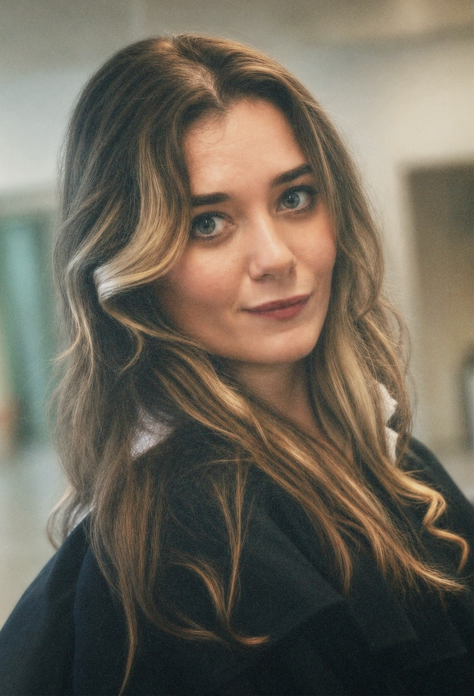

MSc student, Computational Linguistics and Cognitive Modelling · University of Trento
BA in Classics · HSE University in Moscow
I am interested in how people construct space — in language, in text and in thought. My research therefore sits at the intersection of classical philology, cognitive science and digital humanities.
At the Institute for Oriental and Classical Studies, HSE University, I began working on ancient περίπλοι, accounts of voyages along a coastline. These texts record the basic ways in which the Greeks described space at different stages in the development of geography; I am trying to work out what cognitive mechanisms lie behind that way of rendering the world, and what it can tell us about human thinking.
At the moment I am building a digital corpus of ancient periploi and beginning an MSc in computational and cognitive linguistics at the University of Trento. Alongside that I teach languages and write popular-science essays on cognition and learning.

⎈
Cognitive mechanisms of spatial conceptualization in ancient Greek periploi
BA thesis · HSE University, 2026
How coastal itineraries encode space as a sequence of landmarks along a route rather than as a surveyable surface, and what that reveals about ancient spatial reasoning.
thesis
⎈
From pathways to projections: the transition from hodological to cartographic thinking in Greek geographical literature
Sapiens ubique civis XII · University of Szeged, 2025
Tracks the shift from route-based description to map-based projection as a change in cognitive framing.
conference paper
⎈
The manuscript tradition and interpretation of periplus texts: the written legacy of Marcian of Heraclea
University of Ioannina, 2025
What the transmission history of Marcian's text reveals about how later readers understood the genre they were copying.
conference paper
✦
Periploi — annotated corpus of ancient coastal itineraries
in progress
Extending the bachelor's thesis into an open, cognitively annotated corpus with linked place data and a spatial-reasoning benchmark for language models.
project